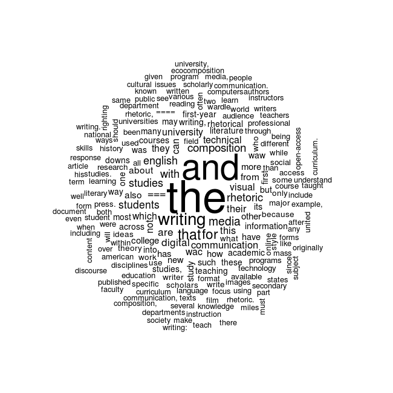

The dustbin of data janitorial work is not the trashcan icon on the desktop of a computer. There is nothing left to sort through and no trace of wasted data to track down. Most of the cleaning or scrubbing occurs programmatically—where programs sort through the data, selecting the items of interest, ingoring the data that does not fit a particular pattern, and then creating a new dataset that is either held temporarily in computer memory or written to disk elsewhere. It may be possible to compare newly cleaned data with the previous “raw” dataset, to see what is missing—what has been left out or what has changed—but with large datasets such an analysis could be just as difficult as completing the data janitorial work in the first place. As Scott XXX exemplifies in blog post, the importance of data janitorial work awareness isn’t XXX.
In order to build a wordcloud we need to conduct a word frequency analysis. Word frequency analyses count how many times a unique string of characters, such as “writing,” appear in a corpus. Word frequency is the key quantitative component in a wordcloud. The words with the highest frequency are displayed with the largest font, and the words with the lowest frequency are displayed as the smallest font. Computers do not “know” what a word is. Rather, the computer merely locates unique strings of characters and counts how often they repeat. Since individual words are differentiated based on the spaces between the sets of characters, the word “writing,” with a comma next a different set of characters than “writing” without a comma. Also, the word “Writing” with a capital “W” is a different string of characters than “writing” with a lowercase “w” because uppercase and lowercase letters are different characters. Therefore, before a word frequency analysis can be completed, the dataset needs to be “cleaned” so that “Writing” and “writing,” and “writing” are all counted as three occurances of the word “writing”—rather than the computer counting them as three separate sets of characters. In order for “writing” to be counted as three occurances of the same word, punctuation is removed from the corpus and all letters are changed to lower case.
Another, area of data cleaning or scrubbing that needs to occur before we can complete a frequency analysis is the removal of stop words. There is no universal list of stop words, but lists of stop words removed from text corpora tend to be the words that do not hold semantic value for analysis. Words like “the, and, it, is, there, that” and so forth are the typical words removed when stop words are removed from corpora. Also, numbers are usually removed as well, unless there are numbers in a corpus that are of particular relevance to an analysis. For example, if there are years like “2015” or “1975” that are important to an analyis, then numbers will not be removed.
This is one example of what is called data scrubbing or data janitorial work.[^3] While much attention is given to beautiful data visualizations and wonderfully designed infographic media, the “art” of data science is the systematic cleaning of data so that meaningful summaries and descriptions may be produced without reducing the dataset to something that is no longer representative of its original unstructured content. There is no universal or always-correct methodology for how data janitorial work should proceed. Data scrubbing is always a relative triangulation among a particular dataset, a project’s goals, and the analyses and visualizations that a project eventually produces. This is the most difficult step to understand in data literacy because for many scholars in the humanities the term “data” is generally understood as something synonymous with a spreadsheet. Data is often percieved as the columns of numbers or words that appear in a basic grid format. While spreadsheet data is no doubt an important form of data, once data has been transformed to spreadsheet form, many of the important data scrubbing activities have likely already occurred. Anything can become data. One of the primary questions statistcal rhetoric must ask in data literacy is thow was a dataset transformed from its “raw”[^4] form into something may be categorized and counted? The transition from unstructured data to spreadsheet (or some other structured form) is often the site where explortory analysis and inventive methods are employed. Certainly, this is not the only site of exploration and invention in statistcal rhetoric, but data scrubbing is often the most powerful and the most overlooked step in making a dataset meaningful.
The first visualization below shows what a default wordcloud would look like if a word frequency analysis was comleted without removing punctuation, numbers, and stop words. By default, R’s wordcloud package changes all words to lowercase, but you can imagine how much more variation there would be in the corpus if this was not a default feature. For example, “the” and “The” would be displayed as separate words. Furthermore, the character strings “===” and “====” show up in the visualization below as well. These strings of characters are used to mark section headers for Wikipedia, and since there are spaces between these strings they are represented in the wordcloud as if they are important words in the corpus. Since there are a high number of section headers in the Wikipedia articles, these strings of characters have a word frequency large enough to be displayed in the visualization. 
In the above wordcloud, we can immediately see one consequence of not cleaning the data: “the” and “and” show up as the largest words in the visualization. By looking closely, there are many variations of “writing” that appear in the visualization with punctuations attached to the string of letters, but “writing” without any punctuation does still show up as the third most frequent term. The bar graph below displays the top 10 terms prior to scrubbing the Wikipedia corpus:
The two images below show the result of scrubbing the Wikipedia corpus. The new bar graph and wordcloud visualizations have changed drastically as a result of the data janitorial work. Here is a list of the transformations that have occurred:
As the two above images display, data janitorial work has a profound effect on what the wordcloud may say about the text data contained in the Wikipedia corpus. The changes in the visualization were made without making any adjustments to the default visual behavior of the wordcloud, but instead the underlying dataset was cleaned and sorted in order to prioritize words more relavant to the type of analysis conducted. If the examples contained in this article were focused on a different type of data, then methods of scrubbing the data may occur in otherwise different fashion altogether. In manual data collection—where humans collect data and place them categorically in a spreadsheet or a database—data scrubbing happens at the moment the human makes a categorical decision about various data in their project. For example, in a research project I am currently conducting with a colleague, we collect images of local graphiti art by taking photographs of the art and categorizing them rhetorically. The act of deciding which column or category would best fit each photo is a type of data janitorial work—where unstructed collections of photos are placed into separate categories and provided with additional metadata. There is no universal methodology of data janitorial work, and often this exploratory and inventive aspect of data analysis is not fully disclosed or made available along with data visualizations. However, limitations in access do no reduce the role that data scrubbing plays in data visualization, and working to better understand this overlooked aspect of data analysis can further influence an inventive approach to information rhetorics.